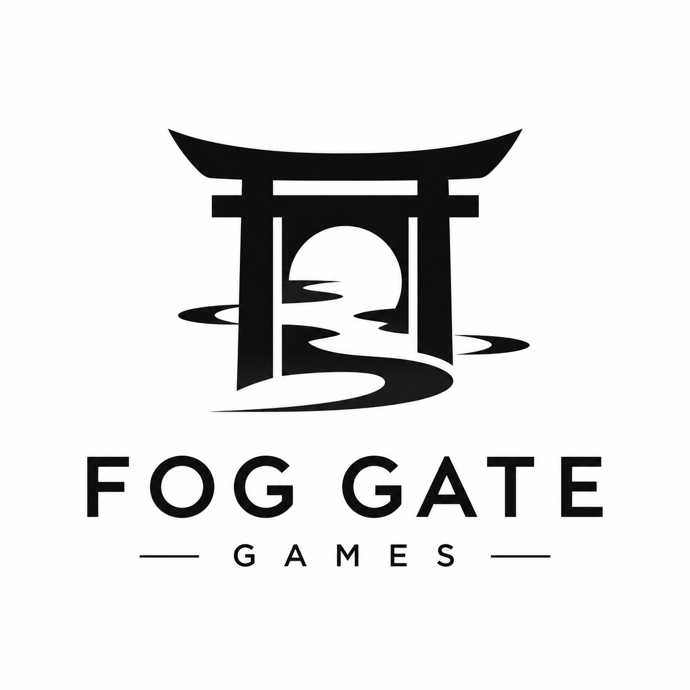

Atmosphere first
Lighting, sound, environments and pacing come together to create places with a presence of their own.

Fog Gate GamesIndependent Game Studio Our debut game ↗Fog Gate Games creates dark, atmospheric experiences built around mystery, memorable characters and stories that linger after the screen goes black.

Psychological Horror
01 · The studio
We are a small studio focused on building distinctive worlds with a strong visual identity and an emotional core.
We believe memorable games are not only played — they are felt.
Every scene, sound and silence should serve a purpose.Lighting, sound, environments and pacing come together to create places with a presence of their own.
Our stories begin with characters — their fears, memories, choices and the consequences they carry.
We want players who look closer, read between the lines and explore to discover more than the obvious path.
02 · Our games
The Girl in Seiran is our debut project — a story-driven psychological horror experience currently in active development.
In developmentFOG GATE GAMES · DEBUT TITLE
“Some memories should stay buried.”
A dark narrative journey surrounding Seiran Hospital. Aoi is drawn through memory, fear and a mystery that refuses to remain buried, in a world where what is remembered may be just as dangerous as what was forgotten.
Enter Seiran →Inside the project
Tension built through atmosphere, uncertainty and the feeling that something is always just beyond what you can see.
The experience follows Aoi through a deeply personal mystery where fragments of memory shape the path forward.
A modern Japanese hospital becomes more than a setting — its spaces, documents and silence are part of the story.
Notes, environments and small discoveries invite players to connect pieces of the mystery at their own pace.
03 · Our vision
We want to create worlds players remember for how they made them feel.
Fog Gate Games is being built around a simple idea: strong atmosphere, meaningful characters and creative independence can make even a small studio feel unforgettable.
04 · Stay beyond the gate
Follow the studio as The Girl in Seiran takes shape. More development updates, media and official channels will be added as we move closer to release.